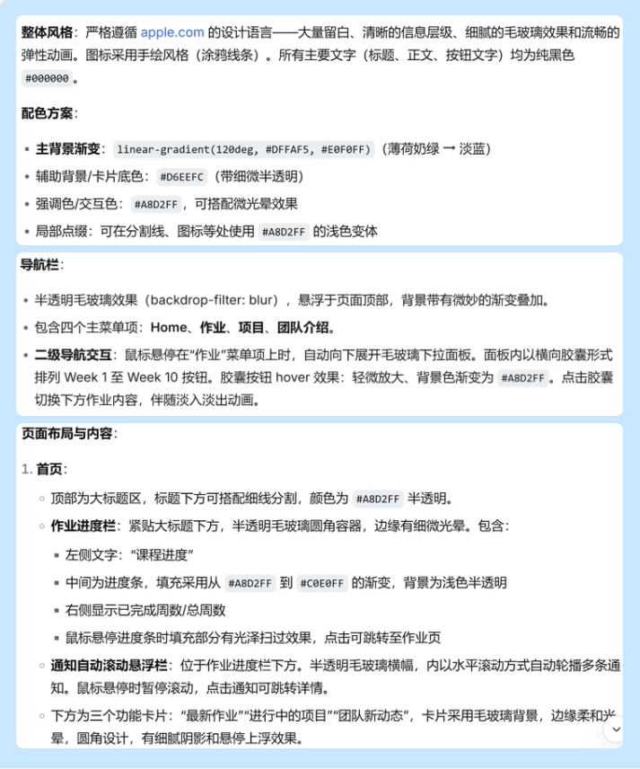
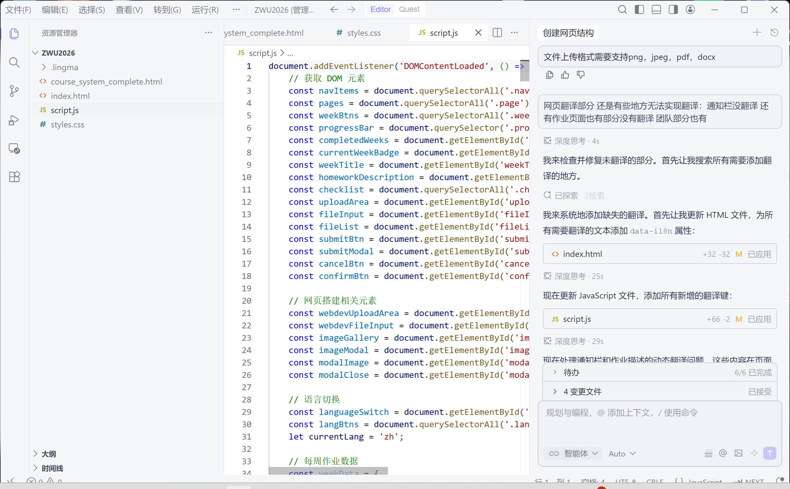

ASD 儿童多感官互动沙盘系统
Multisensory Interactive Sandbox for ASD Children · 面向 ASD 儿童的多感官互动项目
项目概念
本项目面向自闭症谱系障碍（ASD）儿童，设计一个融合触觉、视觉、听觉、动态反馈与环境感知的多感官互动沙盘系统。儿童可以通过触摸、按压、移动沙子、停留手部等行为与沙盘产生互动，系统会实时感知动作变化，并通过灯光、声音、振动、动态画面等方式给予反馈，构建一个低刺激、可探索、具有安全感的沉浸式互动环境。
感官探索
通过多感官通道进行自由的感官探索体验
情绪安全感
建立可预测、柔和的互动环境，增强安全感
提升专注力
以渐进式反馈引导儿童保持注意力集中
缓解焦虑
通过柔和感官反馈缓解焦虑与情绪紧张
核心交互逻辑：动作 - 感知 - 情绪反馈
沙盘系统整体结构
一、触觉层（Touch）
儿童通过抚摸沙子、按压沙面、划动沙子、长时间停留、双手互动等行为触发系统反馈。
二、视觉层（Visual）
通过动态灯光与屏幕内容形成情绪氛围。包括呼吸灯、光波扩散、水波纹动画、粒子流动效果、情绪颜色变化、星空/海洋动态氛围。
三、听觉层（Audio）
根据不同动作触发海浪声、雨声、白噪音、森林环境音、风声、柔和钢琴音效。声音根据交互强度变化音量、节奏和层次，避免突然刺激。
四、触觉反馈层（Haptic）
通过振动模块模拟呼吸感、心跳感、情绪节奏、柔和震动安抚，增强身体层面的感官参与。
传感器系统
FSR 压力传感器
检测沙子按压力度 → 不同力度触发不同颜色、波纹大小变化、动态光扩散
ToF 距离传感器（VL53L0X）
检测手部距离与悬停动作 → 手靠近灯光亮起、悬停触发粒子动画、高度变化反馈
超声波传感器（HC-SR04）
检测大范围靠近行为 → 用户接近时进入互动状态，自动开启环境灯光与声音
电容触摸模块（TTP223）
检测轻触动作 → 轻触触发柔和反馈、长按进入"安抚模式"
麦克风模块（声音传感器）
检测环境声音或儿童发声 → 声音大小影响灯光动态、互动式声音反馈
MLX90614 红外测温传感器
检测手部温度变化 → 关联情绪状态、自动调整灯光色调、"情绪感知"反馈
MPU6050 姿态传感器（可选）
检测沙盘晃动与整体动作 → 倾斜触发流动光效、动态环境变化
输出模块设计
WS2812 RGB LED 灯带
情绪氛围光 · 波纹扩散 · 呼吸灯 · 动态渐变
OLED / TFT 屏幕
动态自然场景 · 情绪图案 · 粒子动画 · 沉浸式视觉内容
DFPlayer Mini + 喇叭
环境音 · 白噪音 · 治愈音效 · 情绪反馈声音
振动马达
柔和震动反馈 · 节奏安抚 · 情绪触觉反馈
当前阶段 Arduino 基础实验
实验一：距离感应呼吸灯
功能：用户靠近沙盘时 → 灯光逐渐亮起、声音缓慢出现；离开后缓慢熄灭。
测试目标：渐进式反馈 / 情绪安抚效果 / 距离感知交互
实验二：压力感应情绪波纹系统
功能：通过按压沙子触发波纹灯效、环境音变化、触觉振动反馈。不同力度对应不同反馈：
| 动作 | 系统反馈 |
|---|---|
| 轻触 | 蓝色柔和波纹 |
| 长按 | 呼吸灯扩散 |
| 重压 | 暖色动态反馈 |
| 停留 | 环境音渐强 |
项目图片记录

图1：项目实验记录图

图2：项目实验记录图

图3：项目实验记录图
项目创新点
- 将"沙盘治疗"与"多感官互动"结合，开创ASD辅助治疗新范式
- 强调低刺激与可预测反馈，专为ASD儿童感官特点设计
- 利用多种传感器构建情绪感知系统，实现多维度交互
- 构建沉浸式动态情绪空间，不强调任务与竞争，更关注情绪陪伴
当前阶段总结
✅ 已完成
- 沙盘互动方向确定
- 多感官系统框架建立
- 主要输入输出模块筛选
- Arduino 基础交互实验规划
- 情绪反馈逻辑初步设计
🔜 下一阶段计划
- 完善动态视觉系统
- 优化声音反馈逻辑
- 研究 ASD 用户交互体验
- 搭建沙盘原型结构
- 测试多传感器联动效果